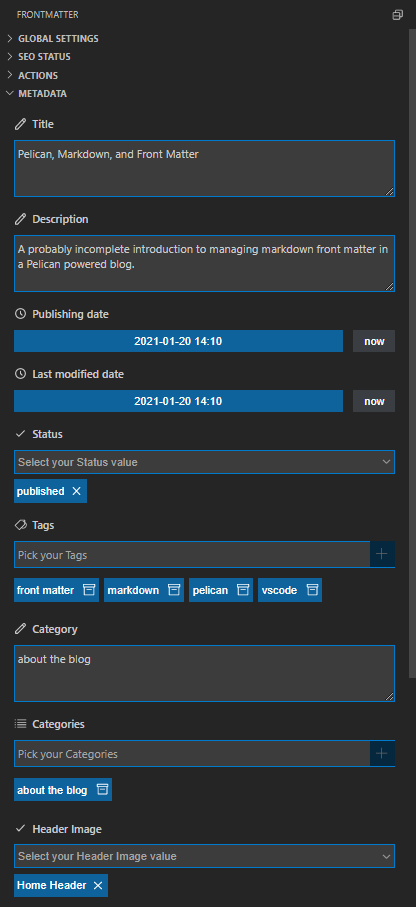

A person with a blog should care about front matter -- and an engineer with a blog should care about making caring about front matter as easy as possible. This article is the start of that caring, where we dive into concept of front matter, see what's options are available for our Pelican blog, and end with an almost satisfactory workflow.
Pelican, Markdown, and Front Matter
It's a little unclear if there is a standard for blog post metadata. Pelican has its own set of metadata fields, defined in the Pelican help, but they don't necessarily map to what other system are using. This is a known issue with the Pelican team and you can track that conversation over at Issue #350.
But even if we move past Pelican's design decision, there is another level of inconsistency. Most Markdown based websites are coalescing around a YAML based front matter style, largely championed by the Pelican competitors, like Jekyll or Hugo. But because Markdown is Pelican's secondary language, after reStructured Text, Pelican doesn't support the language natively. Instead, it defers to the python-markdown extension, which doesn't quite follow the crowd:
Alternatively, You may use YAML style deliminators to mark the start and/or end of your meta-data. When doing so, the first line of your document must be ---. The meta-data ends at the first blank line or the first line containing an end deliminator (either
---or...), whichever comes first. Even though YAML deliminators are supported, meta-data is not parsed as YAML.
So unfortunately, Pelican's current handling of Markdown front matter is limited to a set of Pelican specific keywords and processed by a YAML-light parser.
The Broken Pelican Front Matter Plugin
Fortunately, Axle H. has developed the pelican-frontmark Python library, which is a Pelican plugin that adds the missing YAML support via the PyYAML library.
Unfortunately, it looks like development on it has stopped. It's suffering from a deprecation problem, introduced in this pull request from Pelican. It was fixed in PR #2, but it has yet to be reviewed and accepted.
There's another bug in pelican-frontmark, openly discussed in its Issue #1. The PyYAML parser is too good and automatically converts recognizable text chunks to known Python types before Pelican processes the metadata. This means that when PyYAML comes across a date, it will convert the value from text to the Python native datetime object and store that type. However Pelican expects str and not datetime objects, so you may see the following exception:
ERROR Could not process articles\2020-12-20-dummy.md log.py:96
an integer is required (got type str)
Traceback (most recent call last):
File "....\pelican\generators.py", line 633, in generate_context
context_sender=self)
File "....\pelican\readers.py", line 573, in read_file
content, reader_metadata = reader.read(path)
File "....\pelican-frontmark\frontmark\reader.py", line 138, in read
return content, self._parse_metadata(metadata)
File "....\pelican-frontmark\frontmark\reader.py", line 184, in _parse_metadata
output[name] = self.process_metadata(name, value)
File "....\pelican\readers.py", line 124, in process_metadata
return METADATA_PROCESSORS[name](value, self.settings)
File "....\pelican\readers.py", line 51, in <lambda>
'date': lambda x, y: get_date(x.replace('_', ' ')),
TypeError: an integer is required (got type str)
There is a work around that does not require any code modification. You need to configure your Pelican system to use unrecognizable date formats like 2020-12-20 10:04 instead of datetime-parsable ones, like 2020-12-20T10:04:07.000Z. The PyYAML parser will simply skip over the unrecognizable dates and leave it as text, which is what Pelican's get_date function expects.
However, that work around does not fix the deprecation problem so we're still stuck with a broken plugin. We could fix the plugin and get YAML style front matter working, but that's a task for another day.
Category vs Categories
Before we move onto something that is actually working, we first need to reconcile the design difference outlined in Pelican's issue #350. To begin, we need to talk about the the three different ways to assign search engine friendly labels to an article:
- Tags
- Keywords
- Categories
Tags, Keywords, Categories
Tags and keywords seem to be used interchangeably depending on which publishing system you're using.
Traditionally, keywords are words that exist in the content itself, probably in the title or important paragraphs. They are the shorthand way to describe the article's topic and lend themselves to creating traditional indexes, you know, where all the pages referencing a topic are organized in an listing in the back of a book.
There's not an equivalent for tags. Instead, it appears that tags are built from a collection of keywords and are specific to the system displaying the content. It's easy to get confused when you see the case of tags that only contain single keywords.
And then there are categories, which seem to operate at a higher level than keywords or tags. They are more like themes that group one or more articles together. These articles may have different topics (i.e. keywords and tags), but still be part of a user-defined collection collection.
Pelican supports multiple tags and keywords, but it only support a single category per article. This conflicts with other system that support multiple catagories -- or even nested categories. Again, see Pelican's Issue #350 for the final word on this.
Front Matter Fields
When it comes to front matter then, most systems prefer the multiple categories stored in the categories metadata field. However, Pelican sticks to the single category with the category metadata field. This is frustrating to somebody that likes agnostic systems as neither system has been design with that compatibility in mind (well, maybe [Jekkyl]).
For example, a system processing the category field will not recognize the equivalent of a single value in the categories field. Like wise, a system processing the categories field will not read in the equivalent 'list of size 1' value from the category field. The user is forced to pick a side between camps category and categories, which is unfortunate because the content should be free of any platform specific manipulation. Content that is platform agnostic is open to be processed by other platforms and -- more importantly -- accessed by universal tools that make writing articles easier.
VSCode's 'Front Matter' Extension
VSCode is already the daily driver for work so it was a pleasant surprise to find that Elio Struyf and friends have created Front Matter, an extension that turns the editor in a content management system. The extension is in active development and really leverages the plugin framework of Visual Studio Code to deliver a nice user experience.
Pelican Specific Settings
In the context of our Pelican blog, the plugin adapts quite well. We're able to configure Front Matter it for Pelican via the following settings:
-
Configure the date format to the expected format:
{ .... "frontMatter.taxonomy.dateFormat": "YYYY-MM-DD H:mm", .... }
-
Change the draft field from the
booleanto a Pelican enumchoice:{ .... "frontMatter.content.draftField": { "name": "draft", "type": "choice", "choices": ["draft", "hidden", "published"] }, .... }
-
Specify the modified field from
lastmodtomodified:{ .... "frontMatter.taxonomy.modifiedField": "modified", .... }
-
Change the description field from
descriptiontosummary:{ .... "frontMatter.taxonomy.seoDescriptionField": "summary", .... }
-
Change the arrays from YAML lists to comma separated fields:
{ .... "frontMatter.taxonomy.commaSeparatedFields": [ "tags", "categories", "keywords" ], .... }
-
Remove the YAML quoting from all respective fields:
{ .... "frontMatter.taxonomy.noPropertyValueQuotes": [ "tags", "categories", "modified", "date", "title" ], }
The Content Panel
FrontMatter also provides a new VSCode side panel that acts as a metadata editor.

What's great about this, is that it can also be completely customized by specifying the fields in the project's settings.json file.
The panel can have multiple configurations depending on documentation types. This Pelican blog only have one type, article, so we add a new view that matches an article's type metadata.
{
....
"frontMatter.taxonomy.contentTypes": [
{
"name": "article",
"fields": [
{
"title": "Title",
"name": "title",
"type": "string"
},
{
"title": "Description",
"name": "summary",
"type": "string"
},
{
"title": "Publishing date",
"name": "date",
"type": "datetime"
},
{
"title": "Last modified date",
"name": "modified",
"type": "datetime"
},
{
"title": "Status",
"name": "status",
"type": "draft"
},
{
"title": "Tags",
"name": "tags",
"type": "tags"
},
{
"title": "Category",
"name": "category",
"type": "string",
},
{
"title": "Categories",
"name": "categories",
"type": "categories",
},
{
"title": "Header Image",
"name": "header_cover",
"type": "choice",
"choices": [
{
"id": "/images/article-bg.png", "title": "Article Header"
},
]
}
]
}
]
....
It works great, except for one small hitch. The extension provides a nice tag selection UI for tags, keywords, and categories, and binds to a known type but it doesn't allow us to remap that type to a different field.
For example, we can use the Front Matter UI for YAML categories field but we can't remap it to the Pelican's category field. We can do this with other fields, like drafts, but categories looks like it is hard coded at this point. So, as a work around, we specify the Pelican field category as a string field and keep the categories field around, well, for fun until a solution is found:
{
"title": "Category",
"name": "category",
"type": "string",
},
{
"title": "Categories",
"name": "categories",
"type": "categories",
},
After jumping through all the hoops, Front Matter is a pretty good extension. It's pretty powerful too, probably designed for something more complicated than a simple blog. However, it really nails down the front matter management and is only hampered by an awkward user request to work with an incomplete Markdown implementation provided by Pelican.